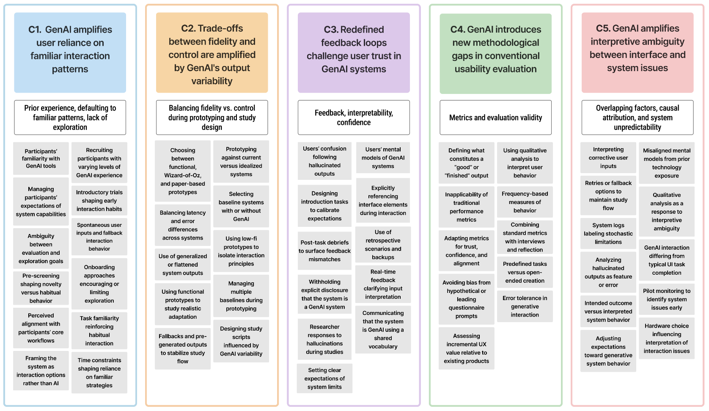

Evaluating Generative AI in the Lab: Methodological Challenges and Guidelines
(opens in new tab)
Venue. arXiv (2026)
Materials.
DOI(opens in new tab)
PDF(opens in new tab)
Abstract. Generative AI (GenAI) systems are inherently non-deterministic, producing varied outputs even for identical inputs. While this variability is central to their appeal, it challenges established HCI evaluation practices that typically assume consistent and predictable system behavior. Designing controlled lab studies under such conditions therefore remains a key methodological challenge. We present a reflective multi-case analysis of four lab-based user studies with GenAI-integrated prototypes, spanning conversational in-car assistant systems and image generation tools for design workflows. Through cross-case reflection and thematic analysis across all study phases, we identify five methodological challenges and propose eighteen practice-oriented recommendations, organized into five guidelines. These challenges represent methodological constructs that are either amplified, redefined, or newly introduced by GenAI's stochastic nature: (C1) reliance on familiar interaction patterns, (C2) fidelity-control trade-offs, (C3) feedback and trust, (C4) gaps in usability evaluation, and (C5) interpretive ambiguity between interface and system issues. Our guidelines address these challenges through strategies such as reframing onboarding to help participants manage unpredictability, extending evaluation with constructs such as trust and intent alignment, and logging system events, including hallucinations and latency, to support transparent analysis. This work contributes (1) a methodological reflection on how GenAI's stochastic nature unsettles lab-based HCI evaluation and (2) eighteen recommendations that help researchers design more transparent, robust, and comparable studies of GenAI systems in controlled settings.
Link to this page: